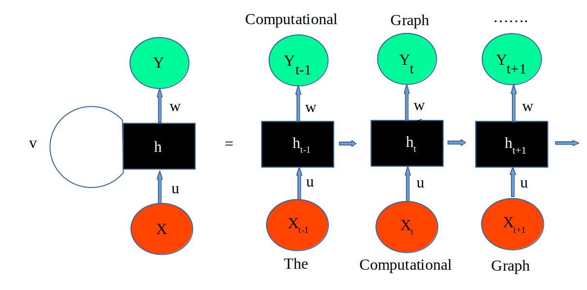
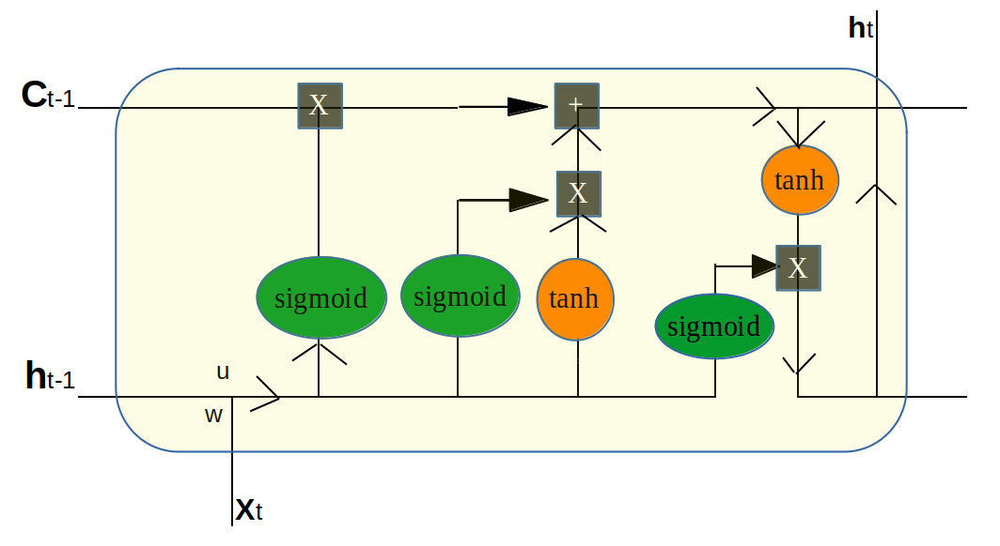
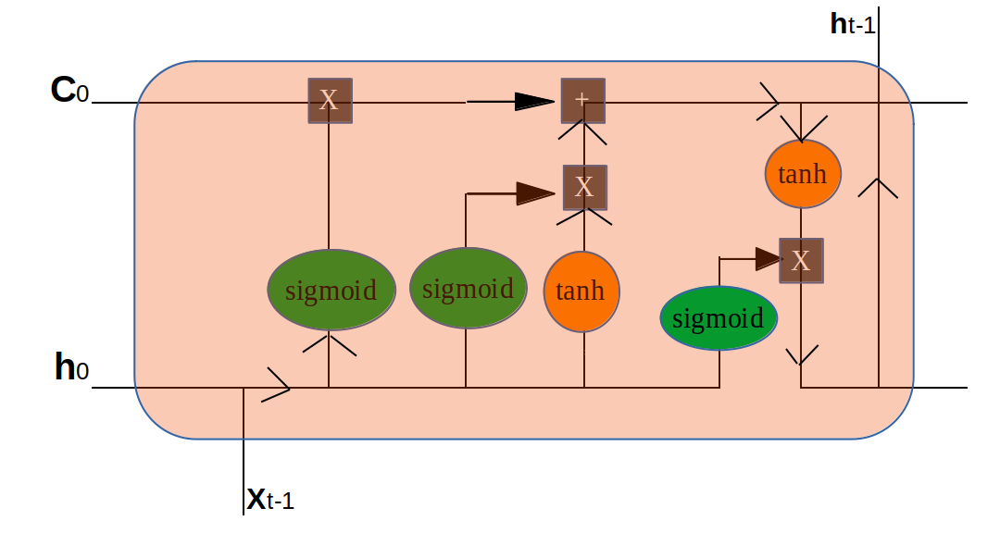
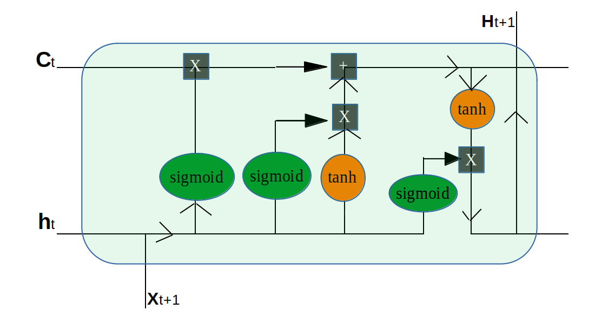

In questo post vediamo come è possibile generare automaticamento un testo tramite un algoritmo di
Deep Learning tramite il metodo RNN e più specificatamente il Long Short Time Memory.
Partiamo dalla rappresentazione grafica di un Recurrent Neural Network.

Nella figura x è l'input, y è l'output e h sono gli hidden layers e v indica la ricorsione dove l'output
diviene poi l'input del ciclo sucessivo.
Nella parte dx della figura lo stesso procedimento viene rappresentato in successione con indicati
i diversi tempi del processo in cui x,y e h hanno t-1 poi t e poi t+1.
u identifica i weights del cell state precedente che applicati ad x vengono elaborati in h.
w identifica i weights che applicati al risultato di h determina y.
Le parole The Computational Graph che nell'esempio che verrà proposto in seguito saranno input qui vengono inserite
nella figura per vedere in modo chiaro cosa avviene, infatti "The" è il primo output che nel passaggio
successivo diviene l'input che poi produce in output "Computational" e così via...
Il modello LSTM è un particolare modello RNN che risolve il problema del vanishing gradient. Qui proponiamo una rappresentazione
grafica.

Come possiamo osservare sono presenti come input C(Cell state) e h state cioè l'output precedente
e poi l'input specifico x.
All'interno del blocco si osservano i diversi full connection layers Softmax activation e Tahn activation
con i dati che seguono le indicazioni delle frecce e con gli elementi di moltiplicazione o somma.
In output otteniamo C state e h che poi diventano input per il blocco successivo come possiamo intuire
vedendo le immagini sottostanti dove vengono indicate le fasi temporali con t-1, t e t+1.


Dopo aver visto una sommaria descrione del LSTM ora viene proposto un modello in Python
di un algoritmo creato con il framework PyTorch che inserendo in input le parole iniziali di una frase
creerà la parte restante della frase.
L'essenza del modello è quella di apprendere dalle parole che vengono inserite in input per cui ad ogni parola inserita in input il modello ci ritorna una parola
in output che poi viene riutilizzata in input nel passaggio successivo e così via fino al raggiungimento
della lunghezza prefissata.
import torch
import torch.nn as nn
import torch.nn.functional as F
import numpy as np
from collections import Counter
import os
sequenceDim=64
batch_size=16
embeddingDim=64
lstmDim=64
numLayers = 3
def getData(input, out, batch_size, sequenceDim,nb):
for i in range(0, nb * sequenceDim, sequenceDim):
yield input[:, i:i+sequenceDim], out[:, i:i+sequenceDim]
class generaText(nn.Module):
def __init__(self, nParole, sequence, embeddingDim, lstmDim,numLayers=1 ):
super(generaText, self).__init__()
self.sequence = sequence
self.lstmDim = lstmDim
self.numLayers = numLayers
self.embedding = nn.Embedding(nParole, embeddingDim)
self.lstm = nn.LSTM(input_size=embeddingDim,
hidden_size=self.lstmDim,
num_layers=self.numLayers,
batch_first=True,
dropout=0.1)
self.out = nn.Linear(lstmDim, nParole)
def forward(self, x, in_state):
embedding = self.embedding(x)
output, out_state = self.lstm(embedding, in_state)
logits = self.out(output)
return logits, out_state
def init_state(self, sequence=1):
return (torch.zeros(self.numLayers, sequence, self.lstmDim),
torch.zeros(self.numLayers, sequence, self.lstmDim))
#IMPORT TESTO
text # vediamo il testo da cui estrarre le parole da inserire in input nel modello
backpropagation is a backward propagation of errors and is a powerful tool of the deep learning. with the gradient descent the backpropagation reduce the cost function and the time of execution. we now talk about of calculate the gradient descent.
with the gradient descent we want find the weights that minimize the errors the cost function through some iterations for search the minimum. there are some method we see the principal the batch gradient descent the stochastic gradient descent and mini batch gradient descent. the first the batch gradient descent is a deterministic method that start always with the same data and produce the same outcome. it calculate the cost function of all the input data and then update the weights through the backpropagation. this process is very expensive in time and resources for load all data in memory especially as data gets big for found the best cost function. the stochastic gradient descent shortened sgd is a stochastic method because the outcome is not always the same. with sgd calculate the cost function of 1 input data and then upgrade the weights. this for every input data. this method is faster because not need of very resources and its most used when we have very input data.
the mini batch gradient descent is recent and its balance between the first 2 method. we get derivative for a ”small” set of points tipical mini batch size is 16 or 32 then update the weights and backpropagate it.
an epoch refers to a single forward pass through all of the training data:
in batch gradient descent there is 1 step for epoch
in stochastic gradient descent there are n steps for epoch were n is the training set size
in mini batch gradient descent there are n steps for epoch were n is equal to training set size/batch size 16 or 32
naturally epoch is another important parameter for artificial neural network.
the epoch
for prevent overfitting there are some tecnics call optimizer. one of this is dropout and most popular are adam and rmsprop. the optimizer are variants to update the weights to give a better performance of neural network. rmsprop is a adaptive learning rate method is a variant of adagrad method for upgrade the weights its modulates the learning rate of each weight in base of their gradient value equalizing the effect.
adam is a new method and most utilised. its a variant of rmsprop. with dropout we avoid overfitting reducing the number of nodes setting to 0 the value of nodes selected randomly. so the hidden layers are in lower number respect the input layers based to dropout parameter inserted into the neural network.
in the above image the graph of search of minimum cost function from 2 to 3 dimensional space.
the formula for calculate the cost function for every input data and for all the input data
in this section we calculate the cost function of a simple linear regression function y = ax + b with the adjusted r squared method.
the adjusted r squared is a method for calculate the error of the predictions value of a regression compared to the actuel value. its adjusted because the squared value is always positive so its divided for 2.
in this example the value of coefficients with a minimum cost function is a = 1 and b = 1 and the model for the regression is y = x + 1 .
in this example we simulated three cases with the coefficients a and b 1 1 2 1 and 2 2 . the results is in the column p1 p2 and p3. then we calculate their cost function in column c1 c2 and c3. doing the sum we have the total cost function and we take the coefficients with the minimum cost function. if we use the backpropagation we take a part of the errors to select the learning rate that is a parameter very important of the machine learning. we select a very small learning rate max 0.05 and update the weights.
here in the schema we show the difference between the batch gradient descent and the stochastic gradient descent. in the sgd after calculate even cost function we update the weights while in the batch we update the weights only after we calculate the total cost function. in mini batch gradient descent we divide the training data into block with the batch size dimension. after we calcolate the cost function of one block and upgrade the weights.
for calculate the gradient we introduce the computational graph. the computational graph is a method for represent a process in some steps a data flow graph were represent the operation in the chart. each step corresponds to a simple operation. there are some inputs and produces some output as a function. in the image the computational graph. the calculation of the local gradient is influenced by the upstream gradient in every step into the backward pass process until the final cost function.
the gradient calculated come back to the hidden layers and then upgrade the weights and the process restart with the forward pass.
the computational graph is used for feedforward and for backforward. now a simple example of a computational graph that represent a function. we calculate the value of the function in black and the gradient in red with the rules show in the image.
the function f x y z = f x+y z with x = 3 y = 4 z = 7 and we insert w = x + y
in the graph we can see how calculate the gradients with the local gradient and the chain rule. the chain rule tells us how find the derivative of a composite function.
the multiply gate return us the gradient with the following rule:
the gradient of x is equal to upstream gradient multiply by y value in the forward pass
the gradient of y is equal to upstream gradient multiply by x value in the forward pass.
the add gate return us the same gradient value of upstream gradient to x and y gradient.
the max gate return us the gradient with the following rule:
who has the greater value in forward pass between x and y take the gradient equal to the upstream and the other take the value equal to zero
in the graph we can see how calculate the gradients with the local gradient and the chain rule. the chain rule tells us how find the derivative of a composite function.
the multiply gate return us the gradient with the following rule:
the gradient of x is equal to upstream gradient multiply by y value in the forward pass
the gradient of y is equal to upstream gradient multiply by x value in the forward pass.
the add gate return us the same gradient value of upstream gradient to x and y gradient.
the max gate return us the gradient with the following rule:
who has the greater value in forward pass between x and y take the gradient equal to the upstream and the other take the value equal to zero
in practice we represent a logistic regression how you can see in the project of the bank marketing. here we have only 2 input layer x1 and x2 but the process for calculate the backpropagation is the same. in the graph in red the value of gradient from right to left that with the backpropagation we update the weights of neural network.
text = text.split()
bow = Counter(text) # bag of words
vocab = sorted(bow, key=bow.get, reverse=True)
nParole=len(bow) # Numero parole inserite in text
numero_to_parola = {k: w for k, w in enumerate(vocab)} # assegna un numero ad ogni parola
parola_to_numero = {w: k for k, w in numero_to_parola.items()} # assegna una parola ad ogni numero
textInNumeri = [parola_to_numero[w] for w in text]
num = int(len(textInNumeri)/(batch_size * sequenceDim))
textInNumeri = textInNumeri[: num * batch_size * sequenceDim]
outTextInNumeri = np.zeros_like(textInNumeri)
outTextInNumeri[:-1] = textInNumeri[1:]
outTextInNumeri[-1] = textInNumeri[0]
textInNumeri = np.reshape(textInNumeri, (batch_size, -1))
outTextInNumeri = np.reshape(outTextInNumeri, (batch_size, -1))
nb = int((textInNumeri.shape[0] * textInNumeri.shape[1])/(sequenceDim * batch_size))
# creazione modello LSTM
lstm = generaText(nParole, sequenceDim,embeddingDim, lstmDim, numLayers)
# creazione loss model ed optimizer
lossModel = nn.CrossEntropyLoss()
optimizer = torch.optim.Adam(lstm.parameters(), lr=0.03)
epochs = 10000
iterator = 0
for epoch in range(1,epochs+1):
# estrazioni dati input ed output
data = getData(textInNumeri, outTextInNumeri, batch_size, sequenceDim, nb)
h_0, c_0 = lstm.init_state( batch_size) # azzerare cell state e hidden state
for x, y in data :
iterator += 1
# Set model in training mode
lstm.train()
# Reset all gradients
optimizer.zero_grad()
# x e y vengono convertiti in Tensor
x = torch.tensor(x)
y = torch.tensor(y)
logits, (h_0, c_0) = lstm(x, (h_0, c_0))
loss = lossModel(logits.transpose(1, 2), y)
h_0 = h_0.detach() # no back-propagation per h_0
c_0= c_0.detach() # no back-propagation per c_0
# otteniamo il valore loss
loss_value = loss.item()
# back-propagation
loss.backward()
torch.nn.utils.clip_grad_value_(lstm.parameters(), clip_value=5) # update gradients
# Update network parameters
optimizer.step()
if iterator % 100 == 0:
print(f'Epoch: {epoch }/{epochs }, ' f' Loss: {loss_value :2.5f}')
parole_iniziali = ['The','Computational', 'Graph']
parole_iniziali2 = ['The', 'backward']
numero_parole_da_generare = 10
lstm.eval() # set model per valutazione
h_0, c_0 = lstm.init_state() # set a zero
nuovo_testo = parole_iniziali
for _ in range(numero_parole_da_generare):
parola_generata = parola_to_numero[nuovo_testo[-1].lower()]
inp = torch.tensor([[parola_generata]])
output, (h_0, c_0) = lstm(inp, (h_0, c_0))
_, topK = torch.topk(output[0], k=3) # seleziona i primi 3 risultati
selezione = topK.tolist()
parola_generata = np.random.choice(selezione[0])
nuovo_testo.append(numero_to_parola[parola_generata])
print(' '.join(nuovo_testo))
Risultato con input ['The','Computational', 'Graph']
Computational Graph in this example we three cases parameter a select very the
Risultato con input ['The', 'backward']
The backward above cost function method in see cases following data can